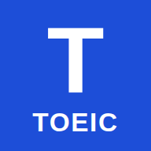
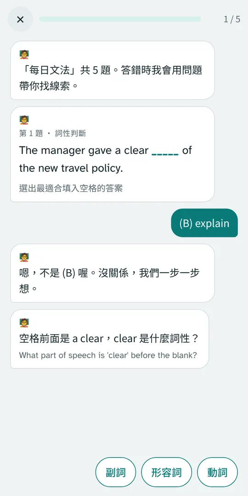
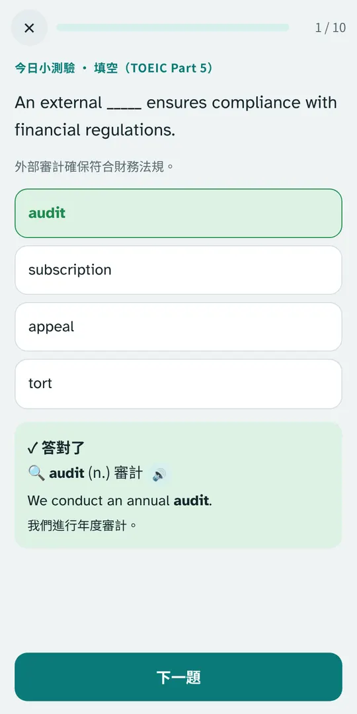
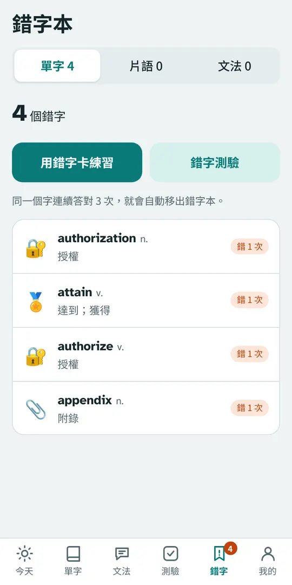
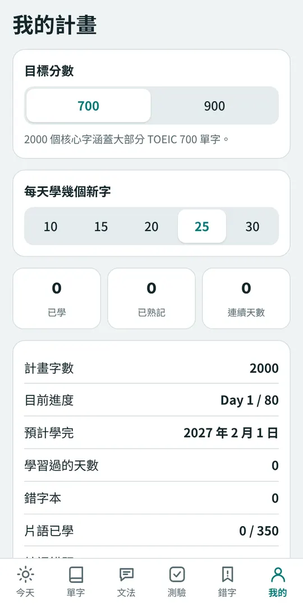

今天
每日任務
學新字、複習、今日片語、小測驗、文法 5 題，照順序做完就好，還有連續天數。
Today: one checklist of new words, reviews, phrases, a quiz and grammar, with a streak.

TOEIC LEARNING免費的 TOEIC 700／900 學習 App：單字、片語、文法一次練。每天有任務、答錯自動進錯字本，不用帳號，沒網路也能用。
A free TOEIC 700 / 900 trainer for your phone: words, phrases and grammar with a daily plan, spaced review and a mistakes deck. No account, works offline.
✓ 免費 Free ✓ 免帳號 No sign-up ✓ 可離線 Offline ✓ 中英對照 Chinese + English
打開 App 先選目標分數（700 或 900）和每天學幾個字，App 會排好每天的任務。下面是 6 個分頁。Pick a target score and a daily pace; the app plans each day for you.
學新字、複習、今日片語、小測驗、文法 5 題，照順序做完就好，還有連續天數。
Today: one checklist of new words, reviews, phrases, a quiz and grammar, with a streak.
每張卡有圖示、中英解釋、簡單例句、TOEIC 例句、發音、相關字和易混淆字。片語也一樣。
Words & phrases: swipe cards with pictures, bilingual meanings, examples, audio and look-alike words.

20 個 TOEIC Part 5／6 常考主題。答錯時小老師會先問問題帶你找線索，再講規則。
Grammar: a chat tutor that asks guiding questions when you get one wrong, then explains the rule.

選中文意思、填空（TOEIC Part 5）、聽音選字、拼字等，可以一直重做。
Quiz: six question types, retake as often as you like.

答錯的單字、片語、文法自動收進來，用錯字卡練或錯字測驗；連續答對 3 次就畢業。
Mistakes: wrong answers collect here and leave after three right answers in a row.

改目標分數和每天字數，看進度和預計學完日，還能備份進度換手機。
Me: change your plan, see progress and the finish date, back up progress.
三種方式選一種。Choose one of three ways.
toeic-vocab.apk。Download the APK.💾 進度存在你自己的手機或瀏覽器裡，不需要帳號。換手機時，到「我的 > 備份進度」匯出，再到新手機匯入。
Progress stays on your device. To move it, use Me > Backup progress, then import on the new device.